Luz e Decomposição
Espectro, prisma e cores.
projeto escolar · 2ºB
Óptica, bengala com sensor, semáforo com Arduino, pontos acessíveis e o Guardião do Silêncio — um caderno de investigação para explorar luz, visão, tecnologia e inclusão.
hipótese em teste
escolha um para continuar
Espectro, prisma e cores.
Reflexão, planos e curvos.
Formação de imagem e defeitos.
Convergentes, divergentes e aplicações.
Sensor e acessibilidade.
Circuitos, LEDs e programação.
Mapa e locais de inclusão.
Sensor de som e níveis de ruído.
módulo 01
Estudo do espectro luminoso, da decomposição da luz branca e das cores.
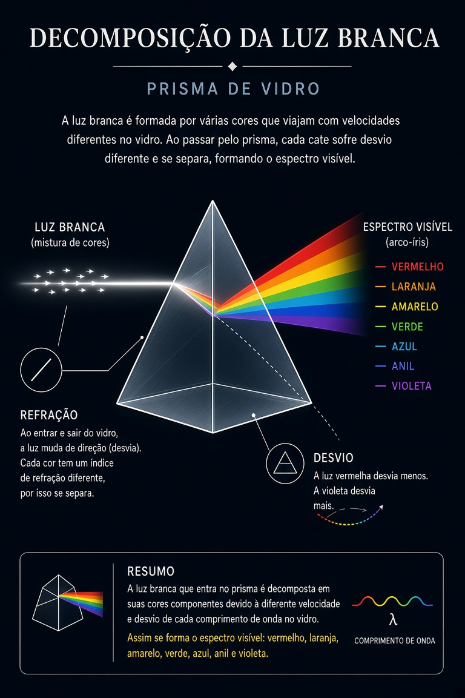
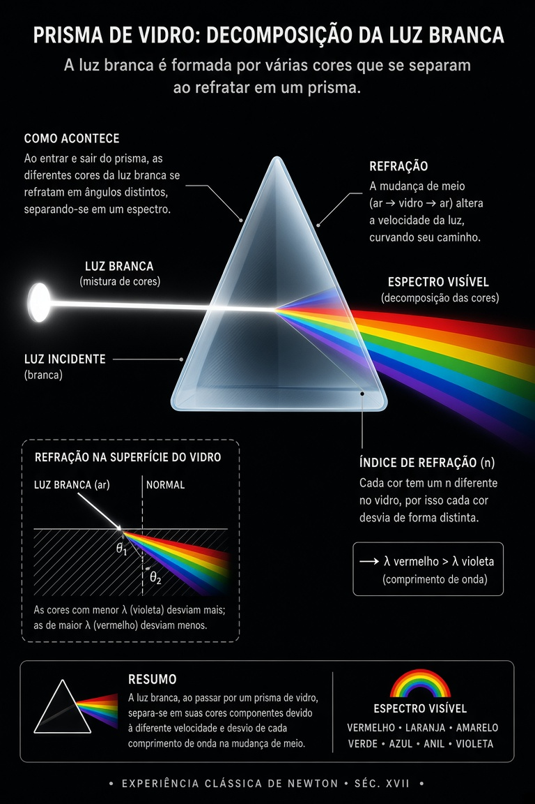
A luz é uma onda eletromagnética visível. No vácuo, sua velocidade é aproximadamente c = 3 × 10⁸ m/s. A relação fundamental é c = λf.
Quando a luz branca atravessa um prisma, ela se decompõe nas cores do espectro.
O espectro visível vai de cerca de 400 nm (violeta) a 700 nm (vermelho).
módulo 02
Reflexão da luz em superfícies planas e curvas.
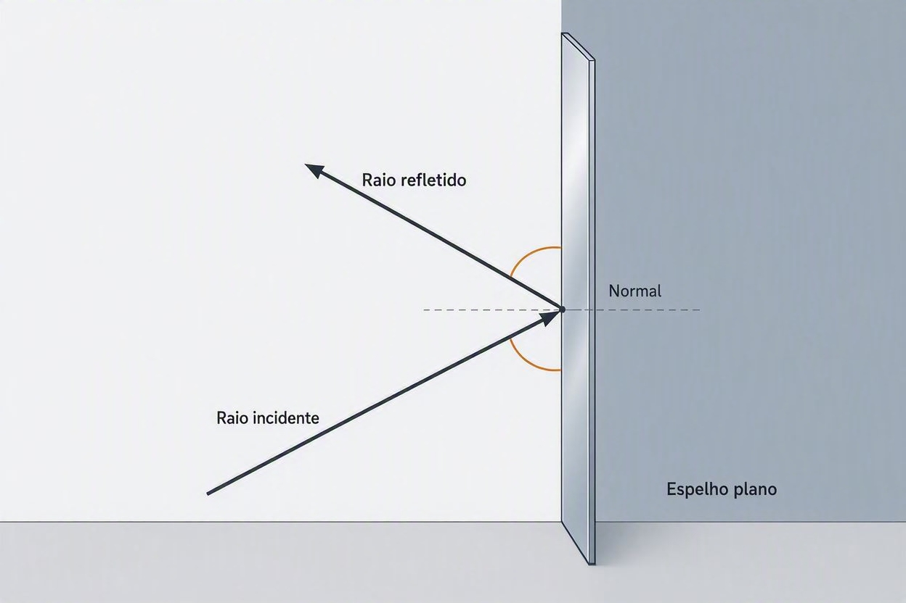
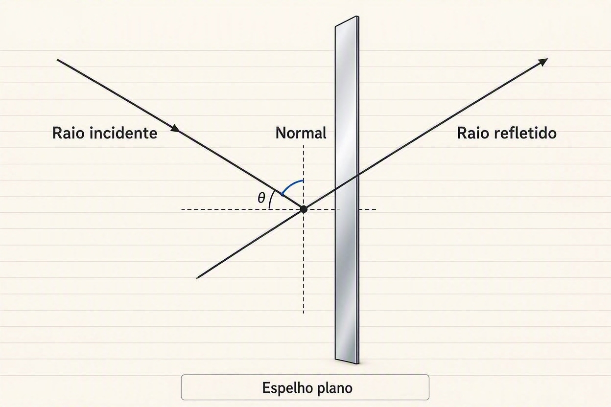
O ângulo de incidência é igual ao ângulo de reflexão.
Forma imagens virtuais, direitas e simétricas.
Côncavos e convexos formam imagens diferentes.
módulo 03
Como o olho humano forma imagens e os defeitos da visão.
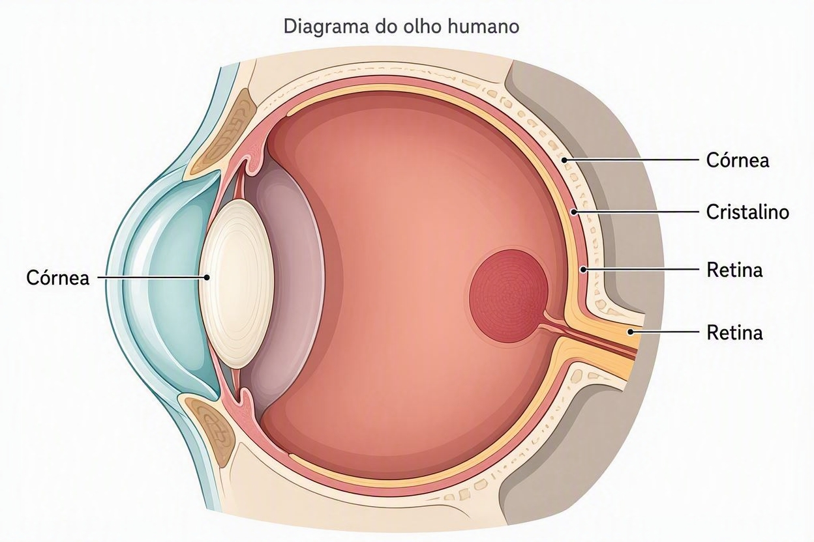
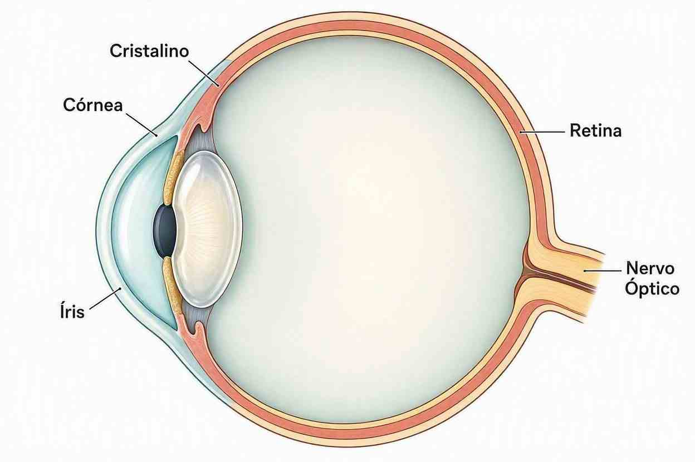
Córnea e cristalino atuam como lentes. A imagem forma-se na retina.
O cristalino muda de forma para focar objetos próximos ou distantes.
Miopia, hipermetropia e astigmatismo.
módulo 04
Lentes convergentes e divergentes e suas aplicações.
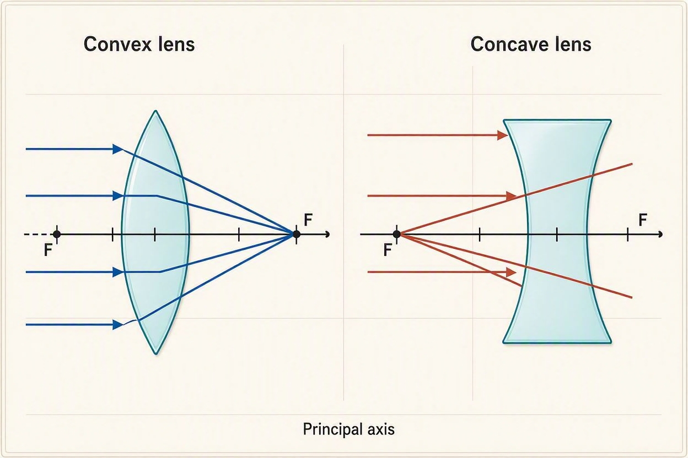
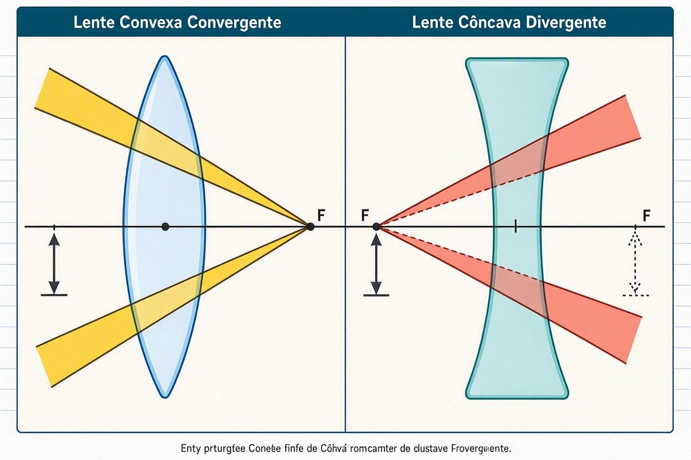
Mais espessas no centro. Convergem os raios para um foco real.
Mais espessas nas bordas. Divergem os raios.
1/f = 1/p + 1/p'
módulo 05
Detectar obstáculos com HC-SR04, LED RGB e buzzer.
.jpeg)
.jpeg)
Bengala inteligente com sensor de distância, LED RGB e buzzer.
O HC-SR04 mede a distância. LED e buzzer mudam conforme a proximidade.
HC-SR04, Arduino, buzzer, LED RGB e bateria.
const int trigPin = 9;
const int echoPin = 10;
const int buzzerPin = 8;
const int redPin = 3;
const int greenPin = 5;
const int bluePin = 6;
void setup() {
pinMode(trigPin, OUTPUT);
pinMode(echoPin, INPUT);
pinMode(buzzerPin, OUTPUT);
pinMode(redPin, OUTPUT);
pinMode(greenPin, OUTPUT);
pinMode(bluePin, OUTPUT);
Serial.begin(9600);
}
void loop() {
digitalWrite(trigPin, LOW);
delayMicroseconds(2);
digitalWrite(trigPin, HIGH);
delayMicroseconds(10);
digitalWrite(trigPin, LOW);
long duration = pulseIn(echoPin, HIGH);
float distance = duration * 0.0343 / 2;
Serial.println(distance);
if (distance > 200) { setColor(0,255,0); noTone(buzzerPin); }
else if (distance >= 100) { setColor(255,255,0); tone(buzzerPin,1000); }
else { setColor(255,0,0); tone(buzzerPin,4000); }
delay(100);
}
void setColor(int r, int g, int b) {
analogWrite(redPin, r);
analogWrite(greenPin, g);
analogWrite(bluePin, b);
}módulo 06
Montagem e programação de um semáforo com LEDs.
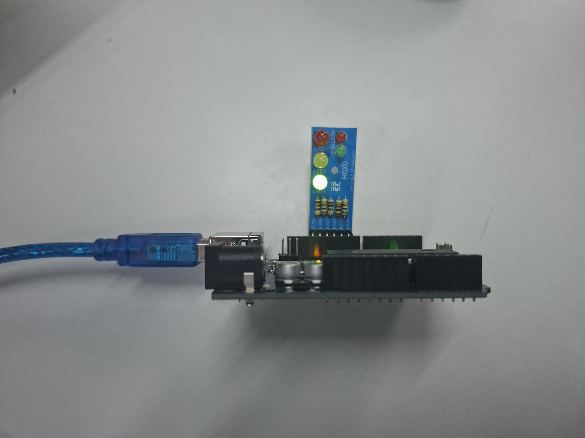
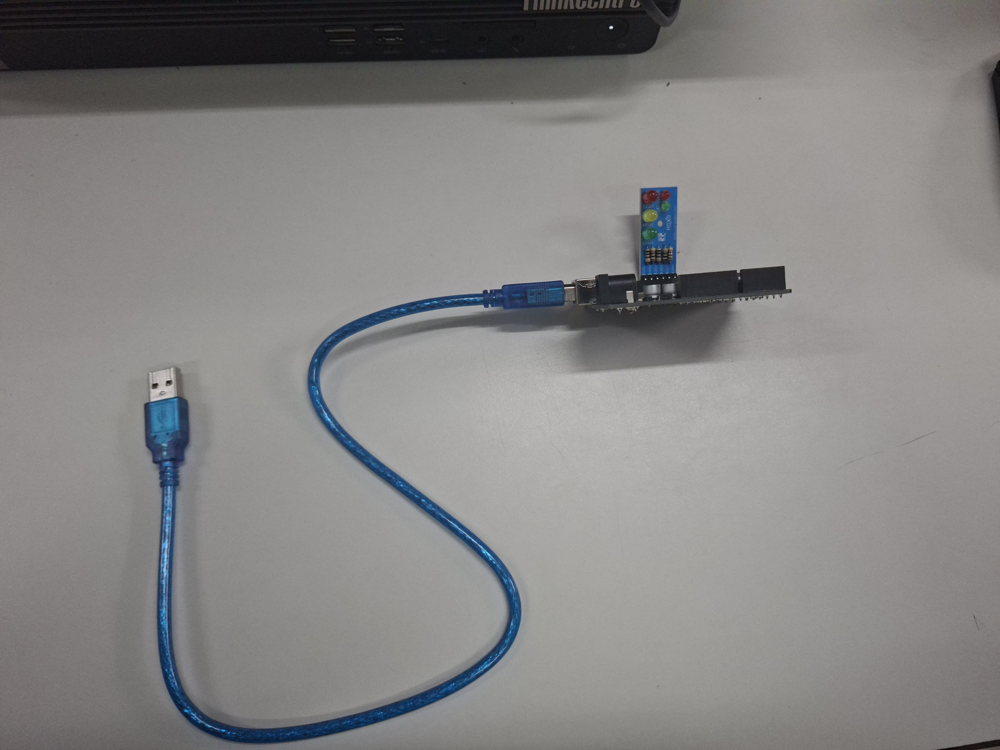
Semáforo didático com Arduino e três LEDs em sequência.
Arduino, LEDs, resistores, protoboard e jumpers.
Verde → amarelo → vermelho, com delays.
#define pinLEDVerde 2
#define pinLEDAmarelo 3
#define pinLEDVermelho 4
void setup() {
pinMode(pinLEDVerde, OUTPUT);
pinMode(pinLEDAmarelo, OUTPUT);
pinMode(pinLEDVermelho, OUTPUT);
}
void loop() {
digitalWrite(pinLEDVerde, HIGH);
digitalWrite(pinLEDAmarelo, LOW);
digitalWrite(pinLEDVermelho, LOW);
delay(2000);
digitalWrite(pinLEDVerde, LOW);
digitalWrite(pinLEDAmarelo, HIGH);
delay(500);
digitalWrite(pinLEDAmarelo, LOW);
digitalWrite(pinLEDVermelho, HIGH);
delay(2000);
}módulo 07
Locais e recursos da escola pensados para inclusão e acessibilidade.
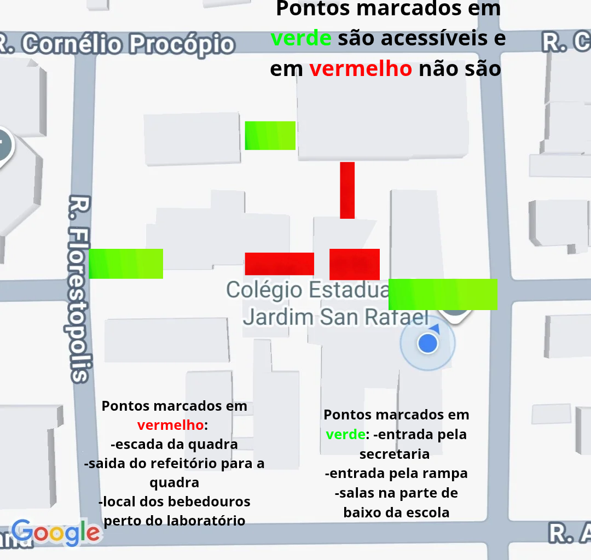
Pontos acessíveis são locais ou recursos da escola que facilitam a circulação, o aprendizado e a participação de pessoas com deficiência ou mobilidade reduzida.
Mapear esses pontos ajuda a identificar o que já funciona e o que ainda pode melhorar, tornando a escola mais inclusiva no dia a dia.
Rampas, corrimãos, banheiros adaptados, sinalização, elevadores, pisos táteis e áreas de circulação livre de obstáculos.
módulo 08
Projeto de monitoramento sonoro: do primeiro protótipo até a versão final funcionando, com níveis de ruído de 0% a 100%.
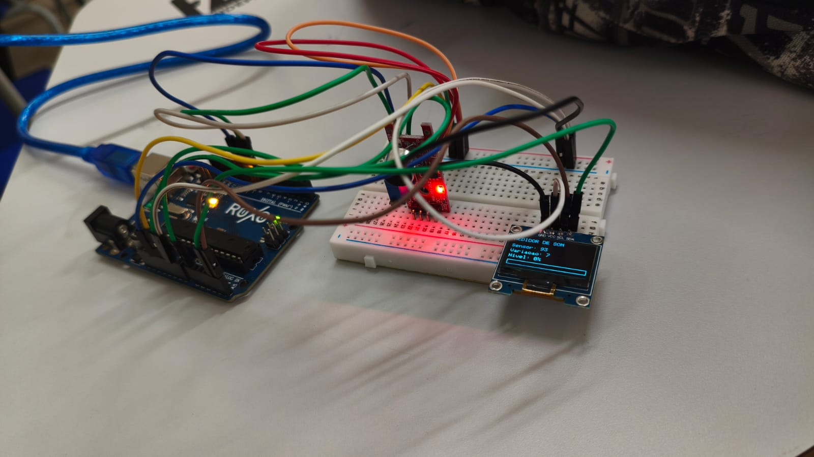
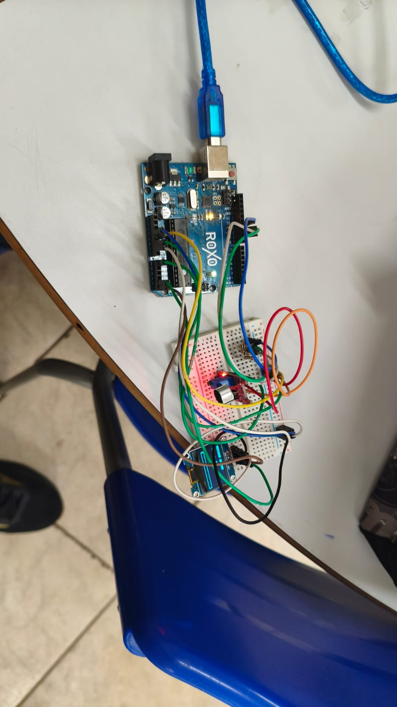
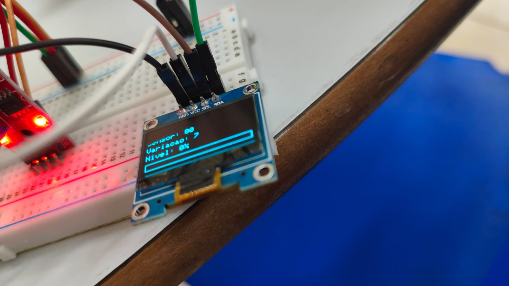
Montamos o primeiro protótipo do Guardião do Silêncio, com sensor de som, microcontrolador e LED indicadores. Nesta etapa o modo de construção ficou definido, mas encontramos um problema: o LED não estava funcionando corretamente.
Pesquisamos soluções e aprimoramos os códigos do projeto. Mesmo assim, surgiu um novo problema: a tela não marcava o som, ou seja, a leitura do nível sonoro não aparecia de forma confiável na interface.
Tentamos corrigir os erros da etapa anterior e, para garantir uma base mais estável, refizemos o projeto do zero: montagem, ligações e estrutura do código foram revisadas novamente.
Conseguimos arrumar a leitura do som e adicionamos uma variável para classificar o nível de ruído em faixas:
Finalizamos o Guardião do Silêncio com todos os erros corrigidos. O sistema passou a funcionar de forma estável: sensor, leitura, faixas de ruído e indicadores operando como planejado.
// Guardião do Silêncio
// Exemplo de estrutura com faixas de som:
// 0% a 25% → conversas
// 25% a 75% → gritaria
// 75% a 100% → impossível ouvir alguém
/*
const int pinMic = A0;
const int pinLed = 13;
void setup() {
pinMode(pinLed, OUTPUT);
Serial.begin(9600);
}
void loop() {
int leitura = analogRead(pinMic);
int nivel = map(leitura, 0, 1023, 0, 100);
Serial.print("Nivel: ");
Serial.print(nivel);
Serial.println("%");
if (nivel <= 25) {
// conversas
} else if (nivel <= 75) {
// gritaria
} else {
// impossível ouvir alguém
}
delay(100);
}
*/informação
O Projeto IFA reúne conceitos de Óptica, protótipos com Arduino, mapeamento de pontos acessíveis na escola e o Guardião do Silêncio.
— Projeto IFA · 2ºB